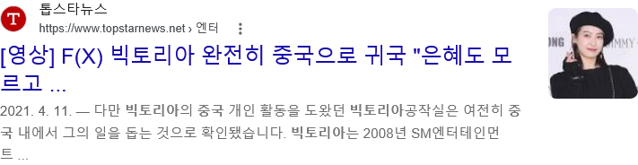

https://cafe.daum.net/dotax/Elgq/4775830?svc=cafeapi

2009년 9월 라차타
2009년 10월 초콜릿 러브
2009년 11월 츄
2010년 5월 NU 예삐오
2011년 4월 피노키오
2012년 6월 일렉트릭 쇼크
2013년 7월 첫사랑니
2014년 7월 Red Light
2015년 10월 4 Walls
2015년 12월 12시 25분
2016년 7월 All Mine
이후로 새 앨범 안내고 방치됨
그냥 해체한거 아님? 할 수 있는데
루나 앰버 2019년까지 SM 소속
크리스탈 2020년까지 SM 소속
빅토리아 2021년까지 SM 소속
SM 소속으로 방치되다가 계약 만료 후 중국으로 떠남
계약 도중에 중국으로 튄거 아님
댓글
수집 당시 댓글 11개
뭐니 · 4 일 전
끄아아악 · 4 일 전
진짜 sm은 에프엑스 왜 버린거지? 이해가 안 감 컨셉 그대로 가도 꽤 오래 갔을텐데
불타는효자 · 4 일 전
설리가 배우 한다고 겉돌아서 그런거 아님?
김양호 · 4 일 전
에프엑스 체급에 유지비를 줄일 수는 없었을거고 그 유지비를 쓰기엔 보이그룹에 투자하는 게 압도적으로 효율이 나와서 아닐까 수명 짧은 아이돌 특성상 에프엑스 정도면 충분히 성공한 케이스인듯
INTP개붕이입니다 · 3 일 전
레드벨벳이 레드컨셉이랑 벨벳 컨셉으로 나눠서 하는 바람에 에펙이랑 겹쳐버림 + 빅토리아가 중국에서 너무 잘되서(sm에서 설립한 중국쪽 소속사에서 열일함) + 2016년 한한령 시작(당시 빅토리아가 중국에서 가장 잘나가는 여자연예인중 한명인데 한한령 터졌는데 한국 넘어가서 다시 그룹 활동하면 그림이 이상해짐)
망구리 · 4 일 전
아무래도 설리영향이 너무 컸다..
한번만넣다뺄게 · 4 일 전
레드벨벳은 노래들이 에프엑스 하위호환이라 별로엿는데..
뉴비곰 · 4 일 전
빅토리아가 계약파기하고 튄것도 아니고 왜 저럼?
Rx100mk3 · 4 일 전
4walls 는 지금들어도 고트임. 앰버가 진짜 노력했던데 ㅠㅠ
추억은방울방울존잼 · 4 일 전
4walls은 진짜 최고임 노래+코디+안무 다 goat 그 자체.....
자숙 · 4 일 전
네명이서 하니 돈이 안되니까지 뭐 레벨도 이번 노래 존나 좋은데 거의 전성기폼인데도 최고성적이 멜론차트 30위권임..걸그룹은 어쩔수없음 아직도 잘나가는 소시 트와이스가 이례적이고 존나 대단한거지